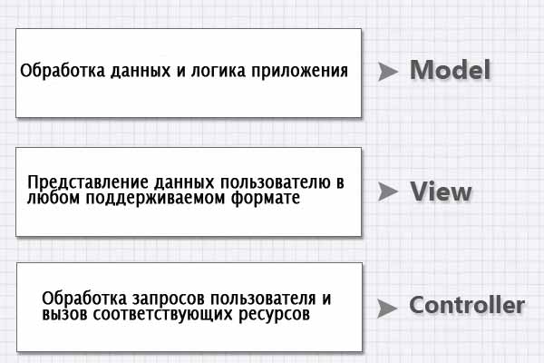

Что такое MVC
Концепция MVC (Model-View-Controller: модель-вид-контроллер) очень часто упоминается в мире веб программирования в последние годы. Каждый, кто хоть как-то связан с разработкой веб приложений, так или иначе сталкивался с данным акронимом. Сегодня мы разберёмся, что такое - концепция MVC, и почему она стала популярной.
Древнейшая история
MVC — это не шаблон проекта, это конструкционный шаблон, который описывает способ построения структуры нашего приложения, сферы ответственности и взаимодействие каждой из частей в данной структуре.
Впервые она была описана в 1979 году, конечно же, для другого окружения. Тогда не существовало концепции веб приложения. Tim Berners Lee (Тим Бернерс Ли) посеял семена World Wide Web (WWW) в начале девяностых и навсегда изменил мир. Шаблон, который мы используем сегодня, является адаптацией оригинального шаблона к веб разработке.
Бешеная популярность данной структуры в веб приложениях сложилась благодаря её включению в две среды разработки, которые стали очень популярными: Struts и Ruby on Rails. Эти две среды разработки наметили пути развития для сотен рабочих сред, созданных позже.

MVC для веб приложений
Идея, которая лежит в основе конструкционного шаблона MVC, очень проста: нужно чётко разделять ответственность за различное функционирование в наших приложениях:

Приложение разделяется на три основных компонента, каждый из которых отвечает за различные задачи. Давайте подробно разберём компоненты на примере.
Контроллер (Controller)
Контроллер управляет запросами пользователя (получаемые в виде запросов HTTP GET или POST, когда пользователь нажимает на элементы интерфейса для выполнения различных действий). Его основная функция — вызывать и координировать действие необходимых ресурсов и объектов, нужных для выполнения действий, задаваемых пользователем. Обычно контроллер вызывает соответствующую модель для задачи и выбирает подходящий вид.
Модель (Model)
Модель - это данные и правила, которые используются для работы с данными, которые представляют концепцию управления приложением. В любом приложении вся структура моделируется как данные, которые обрабатываются определённым образом. Что такое пользователь для приложения — сообщение или книга? Только данные, которые должны быть обработаны в соответствии с правилами (дата не может указывать в будущее, e-mail должен быть в определённом формате, имя не может быть длиннее Х символов, и так далее).

Модель даёт контроллеру представление данных, которые запросил пользователь (сообщение, страницу книги, фотоальбом, и тому подобное). Модель данных будет одинаковой, вне зависимости от того, как мы хотим представлять их пользователю. Поэтому мы выбираем любой доступный вид для отображения данных.
Модель содержит наиболее важную часть логики нашего приложения, логики, которая решает задачу, с которой мы имеем дело (форум, магазин, банк, и тому подобное). Контроллер содержит в основном организационную логику для самого приложения (очень похоже на ведение домашнего хозяйства).
Вид (View)
Вид обеспечивает различные способы представления данных, которые получены из модели. Он может быть шаблоном, который заполняется данными. Может быть несколько различных видов, и контроллер выбирает, какой подходит наилучшим образом для текущей ситуации.
Веб приложение обычно состоит из набора контроллеров, моделей и видов. Контроллер может быть устроен как основной, который получает все запросы и вызывает другие контроллеры для выполнения действий в зависимости от ситуации.
Разберём пример
Предположим, нам надо разработать онлайновый книжный магазин. Пользователь может выполнять следующие действия: просматривать книги, регистрироваться, покупать, добавлять пункты к текущему заказу, создавать или удалять книги (если он администратор). Давайте посмотрим, что произойдёт, когда пользователь нажмёт на категорию фэнтези для просмотра названий книг, которые имеются в нашем магазине.
У нас есть определённый контроллер для обработки всех действий, связанных с книгами (просматривать, редактировать, создавать и так далее). Давайте назовем его books_controller.php в нашем примере. Также нам нужна модель, например, book_model.php, которая обрабатывает данные и логику, связанные с позицией в магазине. В заключение, нам нужно несколько видов для представления данных, например, список книг, страница для редактирования и так далее.
Следующий рисунок показывает, как обрабатывается запрос пользователя для просмотра списка книг по теме фэнтези:

Контроллер (books_controller.php) получает запрос пользователя [1] (запрос HTTP GET или POST). Мы можем организовать центральный контроллер, например, index.php, который получает запрос и вызывает books_controller.php.
Контроллер проверяет запрос и параметры, а затем вызывает модель(book_model.php), запрашивая у неё список доступных книг по теме фэнтези [2].
Модель получает данные из базы (или из другого источника, в котором хранится информация) [3], применяет фильтры и необходимую логику, а затем возвращает данные, которые представляют список книг [4].
Контроллер использует подходящий вид [5] для представления данных пользователю [6-7]. Если запрос приходит с мобильного телефона, используется вид для мобильного телефона; если пользователь использует определённое оформление интерфейса, то выбирается соответствующий вид, и так далее.
В чем преимущества?
Самое очевидное преимущество, которое мы получаем от использования концепции MVC — это чёткое разделение логики представления (интерфейса пользователя) и логики приложения.
Поддержка различных типов пользователей, которые используют различные типы устройств является общей проблемой наших дней. Предоставляемый интерфейс должен различаться, если запрос приходит с персонального компьютера или с мобильного телефона. Модель возвращает одинаковые данные, единственное различие заключается в том, что контроллер выбирает различные виды для вывода данных.
Помимо изолирования видов от логики приложения, концепция MVC существенно уменьшает сложность больших приложений. Код получается гораздо более структурированным, и, тем самым, облегчается поддержка, тестирование и повторное использование решений.
А зачем использовать рабочую среду?
Когда вы используете рабочую среду, базовая структура MVC уже подготовлена, и вам остаётся только расширить структуру, размещая ваши файлы в соответствующих директориях для соответствия шаблону MVC. Кроме того, у вас будет набор функций, которые уже написаны и хорошо протестированы.
Рассмотрим cakePHP в качестве примера рабочей среды MVC. После установки у вас будет три основных директории:
- app/
- cake/
- vendors/
Папка app является местом размещения ваших файлов. Это место для разработки вашей части приложения.
В папке cake размещаются файлы cakePHP (функциональность рабочей среды).
Папка vendors служит для хранения библиотек PHP сторонних разработчиков.
Ваше рабочее пространство (директория app) имеет следующую структуру:
- app/
- config/
- controllers/
- locale/
- models/
- plugins/
- tests/
- tmp/
- vendors/
- views/
- webroot/
Вам нужно размещать ваши контроллеры в директории controllers, модели в директории models и виды в директории views!
Как только вы начнёте использовать рабочую среду, то сразу станет ясно, где размещается практически любая часть вашего приложения, которую надо создать или модифицировать. Такая организация сама по себе значительно упрощает процесс разработки и поддержки приложения.
Использование рабочей среды для нашего примера
Так как данный урок не имеет целью показать процесс создания приложения с помощью cakePHP, то мы покажем только код для модели, контроллера и вида с комментариями о преимуществах использования рабочей среды MVC. Код специально упрощён и непригоден для использования в реальном приложении.
Помните, мы рассматривали книжный магазин и любопытного пользователя, который хотел увидеть полный список книг по теме фэнтези. Контроллер получал запрос пользователя и координировал необходимые действия.
Итак, как только пользователь нажимает кнопку, браузер запрашивает данный url:
www.ourstore.com/books/list/fantasy
CakePHP форматирует URL по шаблону /controller/action/param1/param2 , где action - это функция, которая вызывается контроллером. В старом классическом виде url будет выглядеть так:
www.ourstore.com/books_controller.php?action=list&category=fantasy
Контроллер
В рабочей среде cakePHP, наш контроллер будет выглядеть так:
<?php
class BooksController extends AppController {
function list($category) {
$this->set('books', $this->Book->findAllByCategory($category));
}
function add() { ... ... }
function delete() { ... ... }
... ... } ?>
Просто, не так ли?. Данный контроллер будет сохранен как books_controller.php и размещён в /app/controllers. Он содержит список функций, которые выполняют действия для нашего примера, а также другие функции для выполнения связанных с книгами операций (добавить новую книгу, удалить книгу, и так далее).
Рабочая среда предоставляет нам множество готовых решений и нужно только сформировать список книг. Есть базовый класс, в котором уже определено базовое функционирование контроллера, таким образом, надо унаследовать свойства и функции этого класса (AppController является наследником Controller).
Все что нужно сделать в списке действий — вызвать модель для получения данных и затем выбрать вид для представления их пользователю. Вот как это делается.
this->Book - это наша модель, и часть кода:
$this->Book->findAllByCategory($category)
сообщает модели, что нужно вернуть список книг по выбранной теме (мы рассмотрим модель позже).
Метод set в строке:
$this->set('books', $this->Book->findAllByCategory($category));
Контроллер передаёт данные виду. Переменная books принимает данные, возвращённые моделью, и они становятся доступными для вида.
Теперь остаётся только вывести на экран вид, но эта функция выполняется автоматически в cakePHP, если мы используем вид по умолчанию. Если мы хотим использовать другой вид, то надо явно вызвать метод render.
Модель
Модель даже ещё проще:
<?php
class Book extends AppModel {
}
?>
Почему она пустая? Потому что она является наследником базового класса, который обеспечивает необходимую функциональность и нам нужно использовать соглашение об именах в CakePHP для того, чтобы рабочая среда выполняла все другие задачи автоматически. Например, cakePHP известно на основании имени, что данная модель используется в BooksController, и что она имеет доступ к таблице базы данных с именем books.
С таким определением у нас будет модель, которая может только читать, удалять или сохранять данные в базе данных.
Код сохраняем как book.php в папке /app/models.
Вид
Все, что нам нужно теперь сделать — это создать вид (по крайней мере, один) для списка действий. Вид будет иметь код HTML и несколько (как можно меньше) строк кода PHP для организации цикла по массиву книг, которые предоставляется моделью.
<table>
<tr>
<th>Название</th>
<th>Автор</th>
<th>Цена</th>
</tr>
<?php foreach ($books as $book): ?>
<tr>
<td> <?php echo $book['Book']['title']; ?> </td>
<td> <?php echo $book['Book']['author']; ?> </td>
<td> <?php echo $book['Book']['price']; ?> </td>
</tr>
<?php endforeach; ?>
</table>
Как можно заметить, вид создаёт не полноценную страницу, а лишь фрагмент HTML (таблицу в данном случае). Потому, что CakePHP обеспечивает другой способ для определения шаблона страницы, и вид вставляется в данный шаблон. Рабочая среда также обеспечивает нас некоторыми вспомогательными объектами для выполнения общих задач во время создания частей HTML страницы (вставка форм, ссылок, Ajax или JavaScript).
Сохраняем вид как list.ctp ( list — это имя действия, а ctp означает шаблон CakePHP) в папке /app/views/books (потому, что это вид для действия контроллера).
Вот так выполняются все три компонента с помощью рабочей среды CakePHP!


Пример комментариев после информационного блока..
Комментарий предыдущего комментария.
Последний комментарий этой беседы.
Следующий комментарий
Последний комментарий